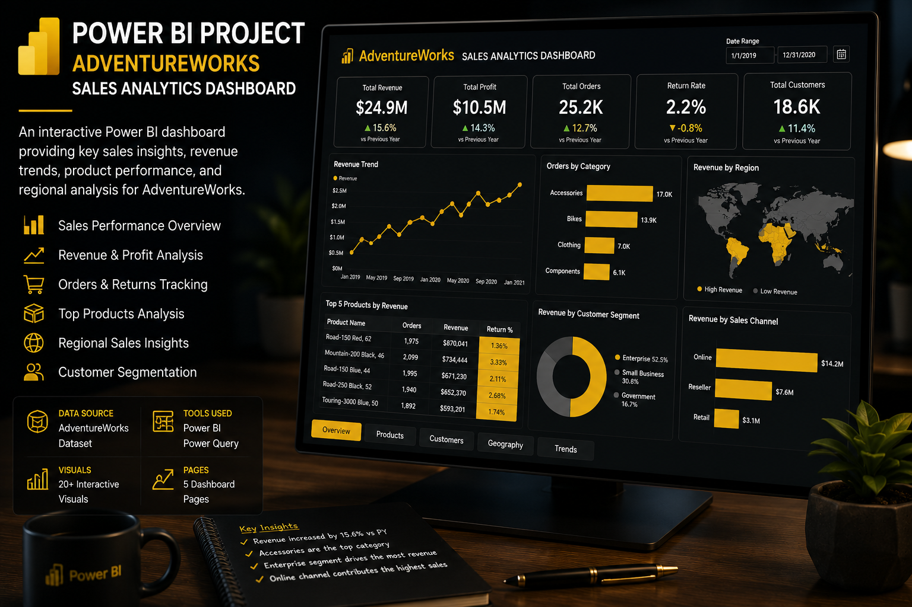
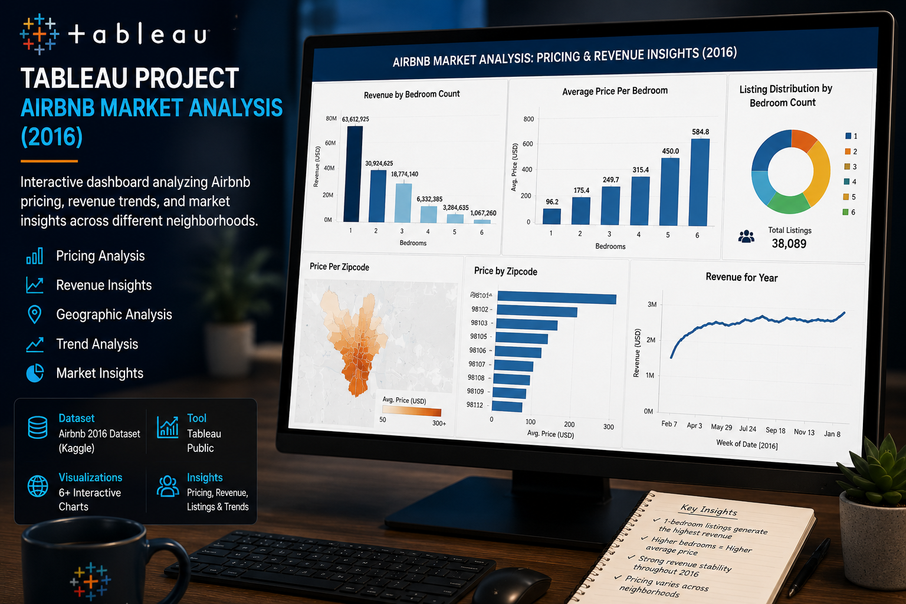
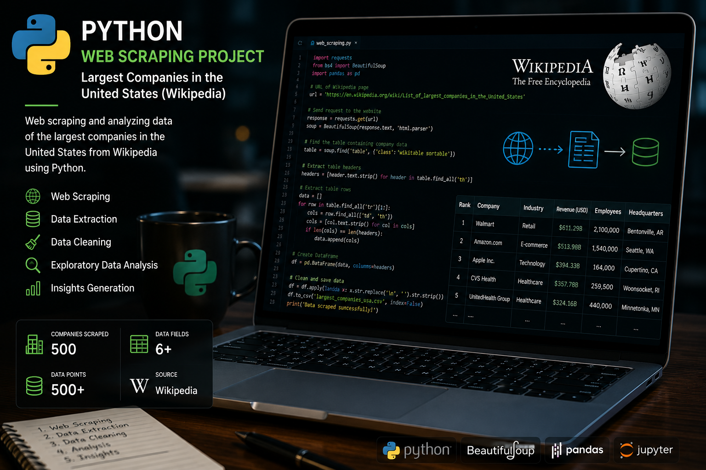
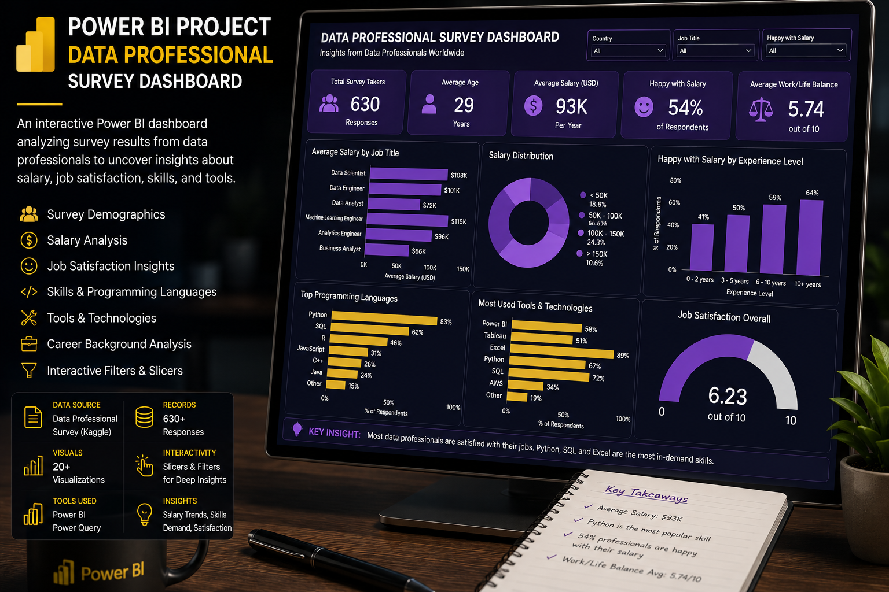
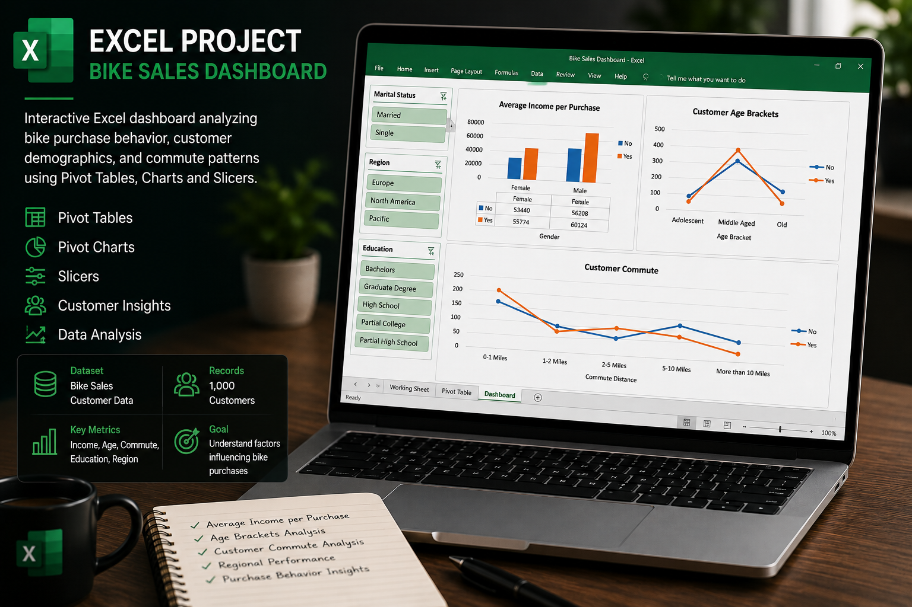

Designed an interactive Power BI dashboard analyzing sales performance, customer insights, product trends, profitability, and regional performance using the AdventureWorks dataset. Implemented KPI tracking, dynamic filtering, geographic analysis, and data modeling to support business decision-making.

Performed end-to-end data cleaning and exploratory analysis on global layoffs data using MySQL. Applied techniques including duplicate removal, data standardization, null handling, and analytical querying to uncover layoff trends, industry impacts, and company-level insights.

Developed an interactive Tableau dashboard analyzing Airbnb pricing trends, revenue distribution, listing concentration, and geographic pricing patterns using the 2016 Airbnb dataset. The project focused on market insights and visual storytelling through business intelligence reporting.

Built a Python-based web scraping workflow using BeautifulSoup, Requests, Pandas, and Matplotlib to extract and analyze revenue data of the largest U.S. companies from Wikipedia. Performed data cleaning, transformation, CSV export, and visualization of revenue trends.

Created a Power BI dashboard analyzing survey responses from data professionals, focusing on salary trends, work-life balance, programming language preferences, demographics, and career satisfaction metrics using real-world survey data.

Built an interactive Excel dashboard using pivot tables, charts, and slicers to analyze customer demographics, purchasing behavior, commute patterns, and income trends related to bike sales data.